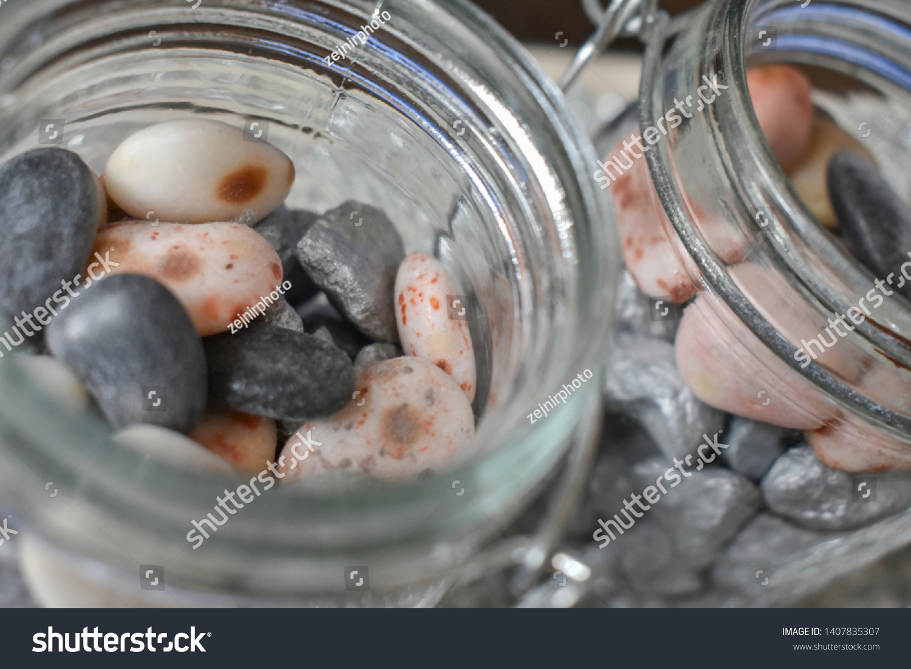
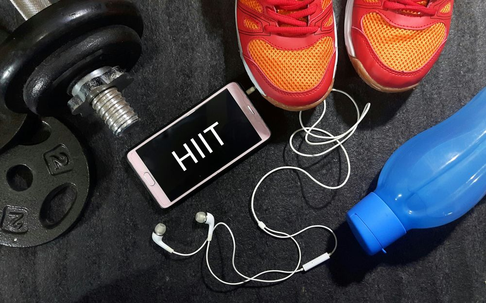
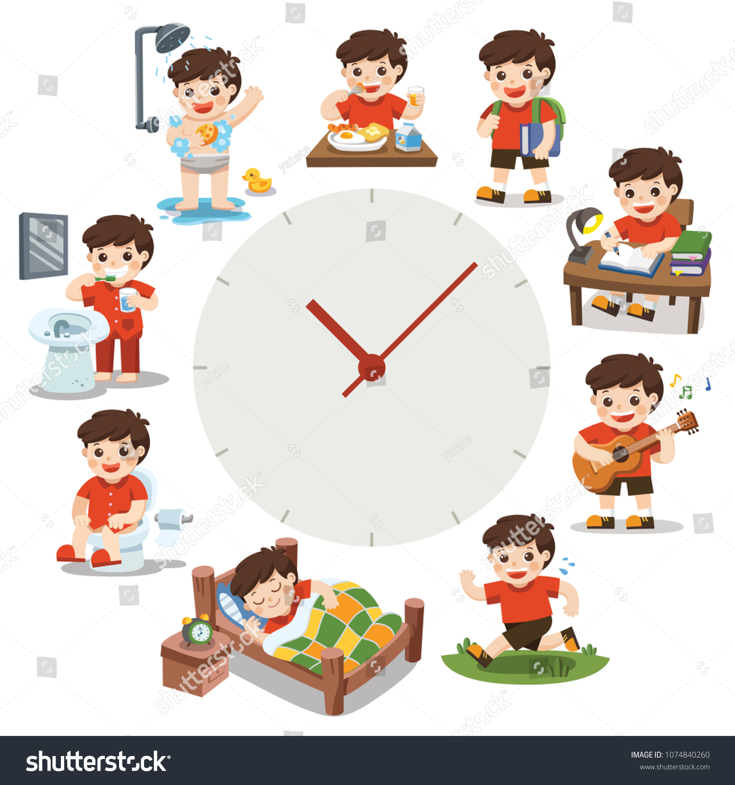
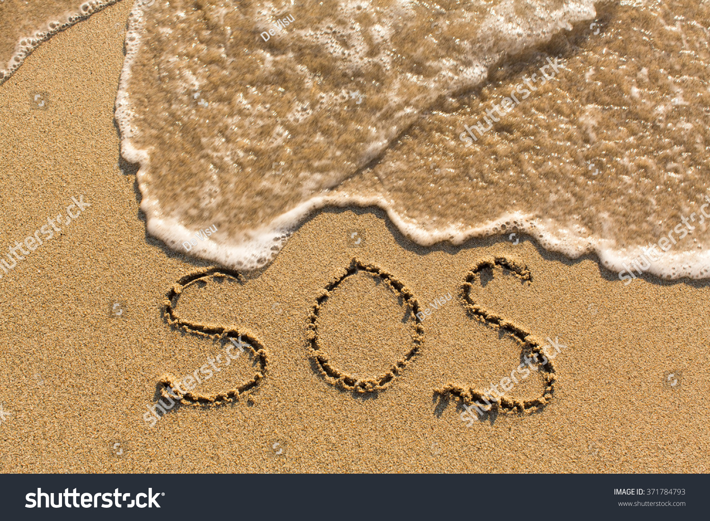

When I first heard of the term SOS run from my run club, I thought it was a type of a fast run powered by adrenaline with some sort of simulated danger like sprinters in bear costume. As wild as my imagination was, I was partly right, a SOS run is indeed fast but there are no bears or costumes involved at least not planned. So what exactly is an SOS run? Its a run to remember, the run you want on race day; it feels suspiciously light; stars are so aligned that you give it your all, shuttering personal records, possibly course records at the cost of a few recovery days, in other words it is Something Of Substance (SOS), manifestation of a productive training cycle, every runner’s dream. So, how do you achieve SOS? I’m not a coach so I can’t speak to training but I can tell you what I know about productivity. Let’s dive in.
Productivity means different things to different people. While some see it as doing all the things, others think of it as doing a few things really well. This post is about something not somethings of substance, so I’ll stick with the latter.
- Priorities

You’ve probably heard of the famous story of rock, pebbles and sand in a jar. The only way to fit them all in is by starting with rocks, then pebbles and finally sand, shaking in-between. Of all the configurations in which you can fill your time (jar), make sure your priorities (pebbles) go in first. Its easier to fit in miscellaneous items in between. Although on the surface it looks like I do a lot, I never have more than 3 priorities at a time, ussually along the lines of career, fitness and creativity. Even within each category I only have at most 2 priorities and everything else falls in the crevasses. Such clarity goes a long way when planning and choosing oportunities to pursue or drop.
- HIIT it out

A HIIT (High Intensity Interval Training) workout is a series of reps of intense effort followed by active recovery. Its so effective that all you need is at most 1 hour a day, that’s right just 1 hour or less. I love it so much I wrote about it here. I believe 80% of great work, mental or physical, is achieved through short sessions of concetrated effort. Contrary to popular misconceptions, the goal of productivity is not to fill every calendar slot; it is to work smarter not longer. This concept is justified by many folks whose SOS have made the news; Larry June only spends 3 hours a day in the studio; The G.O.A.T of trail running Kilian Jornet spends at most 20 hours training, the list goes on … If you’re doing it right, it is practically impossible to sustain intense efforts over a very long time. Guard your HIIT time fiercely and you find yourself plenty of time for everything else.
- On distractions
Here is some meta news for you; Am writing this post now because I have nowhere else to be, nothing else planned for this hour except writing. My phone is tucked away in silent mode and I’m locked in zen mode of Vscode. There is probably a bunch of things that need my attention; instead of instantly reacting to them, I’ll thoughtfully respond after my writing block is over. These are micro distractions and they are easy to identify, it takes some effort to identify macro distractions, the things that take your attention but don’t really complement your long-term goals. Its the meeting you always attend without learning or contributing anything. Its the social-media apps that not only steal your attention and joy, but also provide nothing valuable in return. The sculptor Emil Alzamora goes as far as clearing his calendar so that each day is a blank canvas; highly recommend to try it if you can.
- Routine

Show me a productive person and I bet they have some semblance of a routine. Is it boring? sometimes; effective? absolutely. My philosophy is to keep everything important as boring as possible; think working out, investing, family stuff; left to chance and feelings they’ll probably won’t get done. In the book Ikigai Hector Garcia said it best: “Rituals give us clear rules and objectives, which helps us enter a state of flow. When we have only a big goal in front of us, we might feel lost or overwhelmed by it; rituals helps us by giving us the process, the substeps, on the path to achieving a goal.”
In addition to getting things done, routine gives you an identity, freeing mental space to actually do the work. I can say with certainity that am a morning runner; when the alarm I don’t question whether I should run, I just run and go about my day. Moreover, routines also provide structure to observe, evaluate and adapt. Most of us can attest to this from our holidays’ routines.
- Progress not perfection
So you have committed to priorities, established routines and eliminated distractions. Off to a smooth start but the journey to achieving anything of substance is anything but smooth. You will find yourself, you will run of out of gas and the finish line will seem like a far-fetched dream; quitting will sound very appealing. I should know, I get the same urge everytime I ran an ultra. In these moments, I listen to mantras that work for Courtney Dauwalter, another ultra running G.O.A.T,
“You’re fine. This is fine. Keep going.”
The idea, is to keep the Momentum till it gets better. Running is great, but if all you can do is crawl, crawl away.
The journey to achieving anything of substance is a thorny one. Sometimes your own mind plays tricks against you, sometimes stuff just happens, it helps to move with purpose. Sometimes you may have to dig deeper than productivity for its own sake. Whether it is sense of accomplishment, family, community, religion or spiritual fulfillment, it has to be important to you. Mine is rooted in time; It may not seem like it but our time on this planet is limited, all the more reason to spend it wisely. I enjoy the process of conceiving something to getting it done. Regardless of how it turns out, giving it my best lets me live a life of substance, the ultimate SOS.
